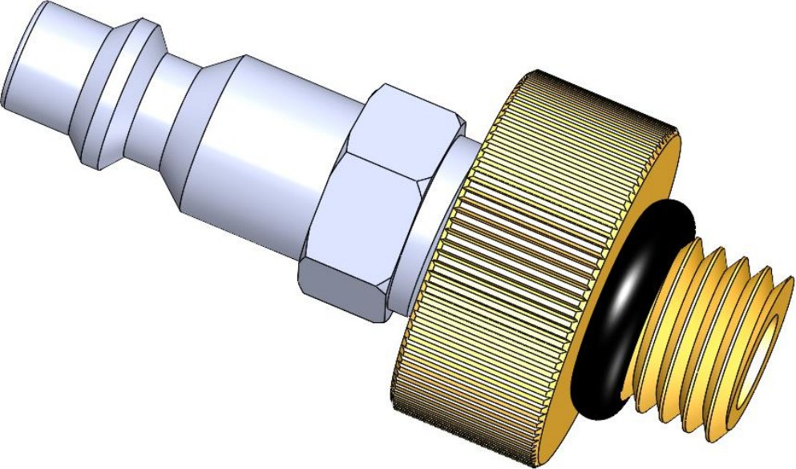
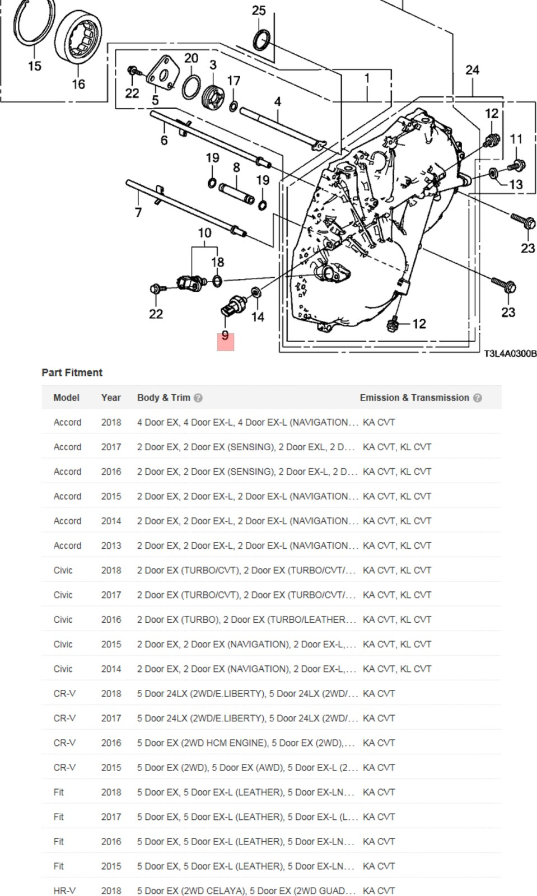

Doc no. MOC-TSB-21-03 // Vol. 21 No. 03 // Mar 16, 2021 // Transmission
Honda ATF Adapter
New94953
MOC has developed a new transmission adapter to be used in the Honda CVT transmissions. This adapter is Part No. 94953. This adapter connects to the pressure sensor port on the transmission permitting a quick and reliable transmission fluid exchange.
What's new
The pressure sensor location is shown in the diagram below as item number 9.
Contact
For more information, contact the Machine & Equipment Department at 866.244.6621.


Part numbers
| Part No. | Description | Notes |
|---|---|---|
| 94953 | Adapter, ATF, Honda CVT Pressure Port |